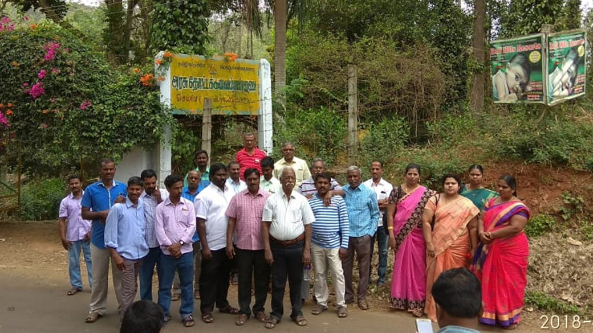
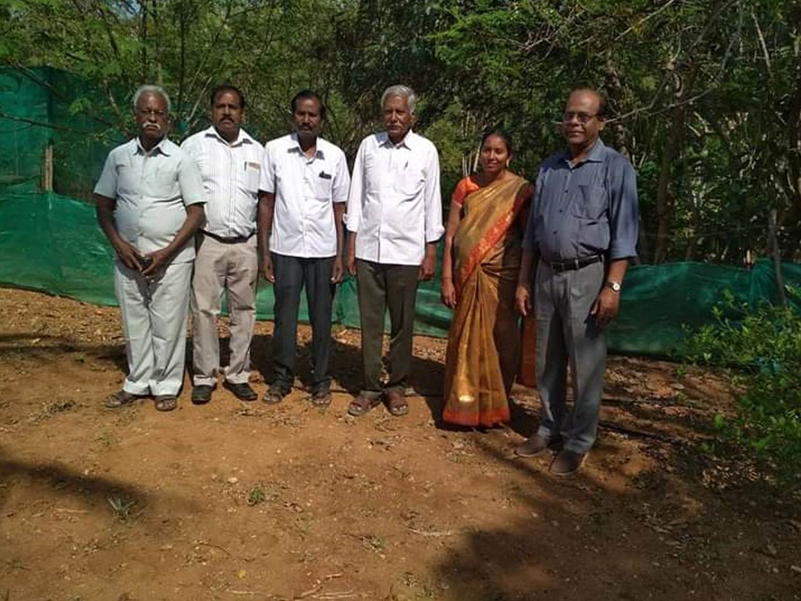

Malarum Parambariyam
Malarum Parambariyam is a registered not for profit Trust with head office at Tiruchirapalli and branches in Chennai and Coimbatore.
This Trust was Registered with registration 2/2018 BK IV Date 10/01/2018 at Tiruchirapalli.
We are fully service minded Trust focusing on spread of practical knowledges of Parambariyam food, plant based medicines and rural sports of our wise ancestors among the young generation of India. Because the young generation, by getting an awareness in these traditional treasures will be vastly benefited both physically and mentally.
The strength of our Trust is the composition of our Trustees.It is conceived and operated by diverse technocrats and service minded personnel with vast experiences in agricultural technology, Animal husbandry, rural development, medicine, development of micro enterprises, women empowerment and skill development.Our experienced team delivers the noble objectives of our Trust.
